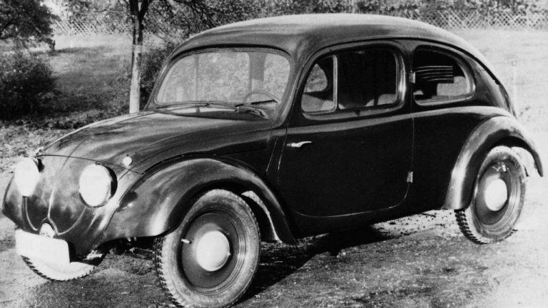
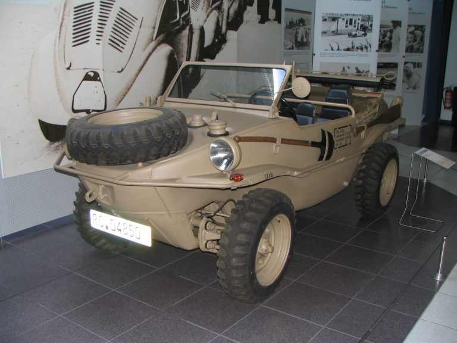
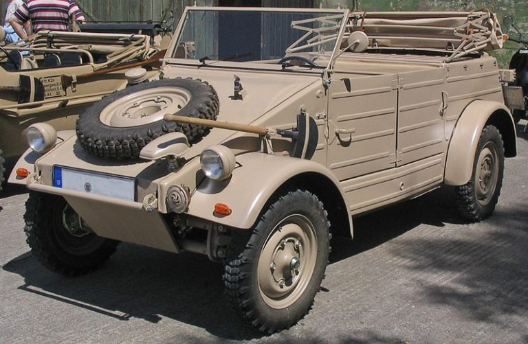
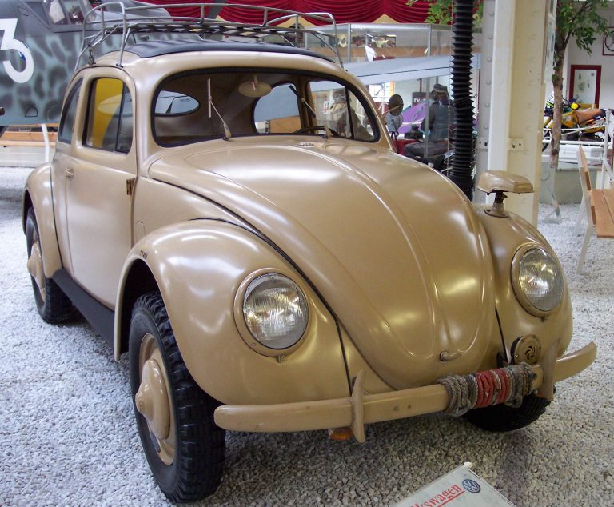

O Volkswagen Typ 1, mais conhecido como fusca, foi idealizado pelo engenheiro austríaco Ferdinand Porsche, que queria criar um carro que fosse acessível para a população.
O projeto ganhou apoio de
Adolf Hitler, que estava ascendendo ao poder na Alemanha e estava comprometido em revitalizar a economia alemã.
O projeto inicial sofreu algumas alterações.
- O carro deveria carregar dois adultos e três crianças (uma típica família alemã da época, e Hitler não queria separar as crianças de seus pais).
- Deveria alcançar e manter a velocidade média de 100 km/h.
- O consumo de combustível, mesmo com a exigência acima, não deveria ser maior que 13 km/litro (devido à pouca disponibilidade de combustível).
- O motor que executasse essas tarefas deveria ser refrigerado a ar, pois muitos alemães não possuíam garagens com aquecimento, e se possível a diesel e na dianteira.
- O carro deveria ser capaz de carregar três soldados e uma metralhadora.
- O preço deveria ser menor do que mil marcos imperiais (o preço de uma boa motocicleta na época).

Primeiro modelo do fusca lançado
Fusca e a Segunda Guerra Mundial
A Volkswagen, anteriormente um grande instrumento de propaganda da capacidade tecnológica alemã, foi integrada às ambições militares de Hitler. A produção foi interrompida após fabricação de poucas
unidades, e a fábrica foi dedicada a produzir veículos de guerra baseados na plataforma do Fusca – usos previstos por Porsche, em seu projeto de carroceria separada do chassis, e pelo próprio Hitler, que
tinha este uso em mente por trás da própria iniciativa em financiar todo o projeto.

Schwimmwagen
Nasceu então Kübelwagen, Schwimmwagen e Kommandeurwagen, que eram utilizados nos campos batalha. A mecânica mudou para atender as necessidades dos combatentes. Virabrequim, pistões,
válvulas, motor de 1.131 CC e 26 CV.

Kübelwagen

Kommandeurwagen
Vendas crescentes
Com o término da Segunda Guerra Mundial, a fabricação retomou lentamente pelas mãos do major inglês Ivan Hirst, que decidiu “adotar” o modelo.
Ele se manteve à frente da fábrica até 1949, onde a Volkswagen já tinha uma rede de concessionárias e exportava seu carro para diversos países, como Inglaterra, e mais tarde, Estados Unidos. Logo em
seguida, o governo recuperou o projeto, deixando no comando de Heinrich Nordhoff.
Em 1946, já existia cerca de 10 mil Volkswagen sedans em circulação. Em 48, o número subiu para 25 mil, sendo 4.400 para exportação. Foi em 1949 que o modelo conquistou seu próprio mercado nos
Estados Unidos. Neste ano já era 50 mil modelos fabricados.
Em 1950 passou a ser oferecido sedã com teto solar dobrável e em 1951 o modelo já era exportado para 29 países, atingindo a produção de 50 mil unidades.
O último modelo foi produzido no México, em 1981, atingindo a marca de 20 milhões de unidades produzidas.